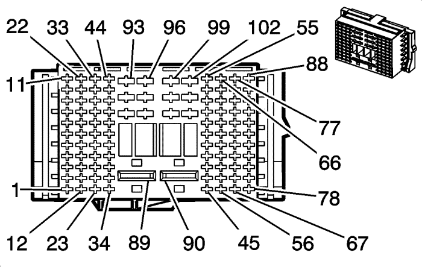

Orlando |
||||||||
|
|
|
|||||||
|
 |

|
Información de parte de conector
| Información de parte de conector
|
Información de parte de terminal
| Información de parte de terminal
|
Bulón | Cable | Circuito | Función | Bulón | Cable | Circuito | Función |
|---|---|---|---|---|---|---|---|
1-7 | -- | -- | No se utiliza | 1-7 | -- | -- | No se utiliza |
8 | 0,5 BN/BK | 3552 | Señal alta de la antena interior de arranque pasivo 1 | 8 | 0,5 BN/BK | 3552 | Señal alta de la antena interior de arranque pasivo 1 |
9 | 0,5 D-BU | 3554 | Señal alta de la antena interior de arranque pasivo 2 | 9 | 0,5 D-BU | 3554 | Señal alta de la antena interior de arranque pasivo 2 |
10 | 0,5 GY/BK | 3555 | Señal baja de la antena interior de arranque pasivo 2 | 10 | 0,5 GY/BK | 3555 | Señal baja de la antena interior de arranque pasivo 2 |
11 | 0,5 WH | 3553 | Señal baja de la antena interior de arranque pasivo 1 | 11 | 0,5 WH | 3553 | Señal baja de la antena interior de arranque pasivo 1 |
12 | 0,75 BN/D-BU | 118 | Señal del altavoz delantero izquierdo (-) (1) (UQG) | 12 | 0,75 BN/D-BU | 118 | Señal del altavoz delantero izquierdo (-) (1) (UQG) |
13 | 0,75 YE/BK | 117 | Señal de altavoz delantero derecho (-) (1) (UQG) | 13 | 0,75 YE/BK | 117 | Señal de altavoz delantero derecho (-) (1) (UQG) |
14 | 0,75 D-GN/GY | 116 | Señal de altavoz trasero izquierdo (-) (UQG) | 14 | 0,75 D-GN | 116 | Señal de altavoz trasero izquierdo (-) (UQG) |
15 | 0,75 D-BU/BK | 115 | Señal del altavoz trasero derecho (-) (UQG) | 15 | 0,75 D-BU | 115 | Señal del altavoz trasero derecho (-) (UQG) |
16 | 0,5 VT/BK | 7553 | Control del solenoide de bloqueo de estacionamiento | 16 | 0,5 VT/BK | 7553 | Control del solenoide de bloqueo de estacionamiento |
17 | 0,5 VT/BK | 3 | Tensión de encendido (ATH) | 17 | 0,5 VT/BK | 3 | Tensión de encendido (ATH) |
18 | -- | -- | No se utiliza | 18 | -- | -- | No se utiliza |
19 | 0,5 D-BU/YE | 6105 | Datos de serie GMLAN de alta velocidad (+) (2) | 19 | 0,5 D-BU | 6105 | Datos de serie GMLAN de alta velocidad (+) (2) |
20 | 0,5 WH | 6106 | Datos de serie GMLAN de alta velocidad (-) (2) | 20 | 0,5 WH | 6106 | Datos de serie GMLAN de alta velocidad (-) (2) |
21 | 0,5 RD/WH | 40 | Voltaje positivo de batería | 21 | 0,5 RD/WH | 40 | Voltaje positivo de batería |
22 | 0.5 YE | 40 | Voltaje positivo de batería | 22 | 0.5 YE | 40 | Voltaje positivo de batería |
23 | 0,75 D-BU | 201 | Altavoz delantero izquierdo (+) (1) (UQG) | 23 | 0,75 D-BU | 201 | Altavoz delantero izquierdo (+) (1) (UQG) |
24 | 0,75 YE | 200 | Altavoz delantero derecho (+) (1) (UQG) | 24 | 0,75 YE | 200 | Altavoz delantero derecho (+) (1) (UQG) |
25 | 0,75 D-GN | 199 | Altavoz trasero izquierdo (+) (UQG) | 25 | 0,75 D-GN | 199 | Altavoz trasero izquierdo (+) (UQG) |
26 | 0,75 WH | 46 | Altavoz trasero derecho (+) (UQG) | 26 | 0,75 WH | 46 | Altavoz trasero derecho (+) (UQG) |
27 | 1 D-BU/VT | 807 | DESAC. / Tensión auxiliar | 27 | 1 D-BU/VT | 807 | DESAC. / Tensión accesoria |
28 | 0,5 VT/YE | 4 | Tensión de encendido (ATH) | 28 | 0,5 VT/YE | 4 | Tensión de encendido (ATH) |
29 | 0,5 BK/GY | 6110 | Referencia baja del sensor de aplicación del embrague | 29 | 0,5 BK/GY | 6110 | Referencia baja del sensor de aplicación del embrague |
30 | 0.5 YE | 6111 | Señal del sensor de accionamiento del embrague | 30 | 0.5 YE | 6111 | Señal del sensor de accionamiento del embrague |
31 | 0,5 GY/RD | 6109 | Referencia de tensión del sensor de accionamiento del embrague | 31 | 0,5 GY/RD | 6109 | Referencia de tensión del sensor de accionamiento del embrague |
32 | 0.5 YE | 7546 | Control del relé de logística | 32 | 0.5 YE | 7546 | Control del relé de logística |
33 | 0,35 GY/D-GN | 7565 | Señal del sensor de temperatura del parabrisas (CJ2) | 33 | 0,35 GY/D-GN | 7565 | Señal del sensor de temperatura del parabrisas (CJ2) |
34 | 0,5 RD/BN | 40 | Tensión positiva de batería (ATH) | 34 | 0,5 RD/BN | 40 | Tensión positiva de batería (ATH) |
0,5 RD/BN | 40 | Voltaje positivo de batería | |||||
35 | 0,5 D-GN/BK | 5103 | Identificación técnica | 35 | 0,5 D-GN | 5103 | Identificación técnica (UDK) |
36 | 0,5 YE/D-GN | 3274 | Señal de transmisión del actuador de función a distancia | 36 | 0,5 YE/D-GN | 3274 | Señal de transmisión del actuador de función a distancia |
37 | 0,5 D-BU/WH | 3275 | Señal de recepción del actuador de función a distancia | 37 | 0,5 D-BU | 3275 | Señal de recepción del actuador de función a distancia |
38 | 0,5 GY/WH | 3272 | Tensión de alimentación del actuador de función a distancia | 38 | 0,5 GY/WH | 3272 | Tensión de alimentación del actuador de función a distancia |
39 | 0,5 GY | 3273 | Retorno del actuador de función a distancia | 39 | 0,5 GY | 3273 | Retorno del actuador de función a distancia |
40 | 0,75 D-GN/VT | 1601 | Señal de bloqueo de la columna de dirección | 40 | 0,75 D-GN/VT | 1601 | Señal de bloqueo de la columna de dirección |
41 | 0,5 D-BU/GY | 636 | Señal del sensor de temperatura del aire ambiente exterior45 | 41 | 0,5 D-BU/GY | 636 | Señal del sensor de temperatura del aire ambiente exterior |
42 | 0,5 D-GN/BK | 3358 | Señal del interruptor de arranque pasivo 2 (ATH) | 42 | 0,5 D-GN/BK | 3558 | Señal del interruptor de arranque pasivo 2 (ATH) |
43 | 0,5 BK/GY | 3359 | Referencia baja del interruptor de arranque pasivo 2 (ATH) | 43 | 0,5 BK/GY | 3559 | Referencia baja del interruptor de arranque pasivo 2 (ATH) |
44 | 0,35 YE/D-BU | 3197 | Señal del sensor de temperatura y humedad (CJ2) | 44 | 0,35 YE/D-BU | 3197 | Señal del sensor de temperatura y humedad (CJ2) |
45 | 0,5 YE/WH | 1161 | Señal de posición del pedal del acelerador (1) (LXV o 2H0) | 45 | 0,5 YE/WH | 1161 | Señal de posición del pedal del acelerador (1) (LXV o 2H0) |
46 | 0,5 BK/D-BU | 1271 | Referencia baja de posición del pedal del acelerador (1) (LXV o 2H0) | 46 | 0,5 BK/D-BU | 1271 | Referencia baja de posición del pedal del acelerador (1) (LXV o 2H0) |
47 | 0,5 BK/VT | 1272 | Referencia baja de posición del pedal del acelerador (2) (LXV o 2H0) | 47 | 0,5 BK/VT | 1272 | Referencia baja de posición del pedal del acelerador (2) (LXV o 2H0) |
48 | 0,5 D-GN/WH | 1162 | Señal de posición del pedal del acelerador (2) (LXV o 2H0) | 48 | 0,5 D-GN/WH | 1162 | Señal de posición del pedal del acelerador (2) (LXV o 2H0) |
49 | 0,5 BK/D-BU | 61 | Referencia baja del sensor de temperatura ambiente exterior | 49 | 0,5 BK/D-BU | 61 | Referencia baja del sensor de temperatura ambiente exterior |
50 | 0,35 VT/WH | 5203 | Señal del sensor de calidad del aire | 50 | 0,5 VT/WH | 5203 | Señal del sensor de calidad del aire |
51 | 0,5 D-GN/GY | 6135 | Bus 4 de red de interconexión lineal | 51 | 0,5 D-GN/GY | 6135 | Bus 4 de red de interconexión lineal |
52 | 0,5 VT/D-GN | 39 | Tensión de encendido | 52 | 0,5 RD/D-GN | 239 | Tensión de encendido |
53 | 0,5 VT/D-GN | 39 | Tensión de encendido | 53 | 0,5 VT/D-GN | 39 | Tensión de encendido |
54 | 0,5 RD/D-GN | 40 | Voltaje positivo de batería | 54 | 0,5 RD/D-GN | 40 | Voltaje positivo de batería |
55 | 0,5 RD/D-BU | 40 | Voltaje positivo de batería | 55 | 0,5 RD/D-BU | 40 | Voltaje positivo de batería |
56 | -- | -- | No se utiliza | 56 | -- | -- | No se utiliza |
57 | 0,5 BN/YE | 39 | Tensión de encendido | 57 | 0,5 RD/D-GN | 39 | Tensión de encendido |
58 | 0,75 GY/YE | 6188 | Control de desbloqueo del motor del maletero/luna trasera | 58 | 0,75 GY/YE | 6188 | Control de desbloqueo del motor del maletero/luna trasera |
59 | 1 WH/BN | 6815 | Control de potencia involuntaria | 59 | 0,5 WH/BN | 6815 | Control de potencia involuntaria (GLV) |
60 | -- | -- | No se utiliza | 60 | -- | -- | No se utiliza |
61 | 0,5 BN/VT | 193 | Control del relé del desempañador trasero | 61 | 0,5 BN/VT | 193 | Control del relé del desempañador trasero |
62 | 0,35 BK/D-BU | 50 | Toma de tierra | 62 | 0,35 BK/D-BU | 50 | Toma de tierra |
63 | 0,35 GY/D-BU | 7564 | Señal del sensor de humedad (CJ2) | 63 | 0,35 GY/D-BU | 7564 | Señal del sensor de humedad (CJ2) |
64 | 0,35 YE/RD | 597 | Referencia de 5V (CJ2) | 64 | 0,35 YE/RD | 597 | Referencia de 5V (CJ2) |
65 | 0,5 BN/RD | 1274 | Referencia de 5V de posición del pedal del acelerador (2) (LXV o 2H0) | 65 | 0,5 BN/RD | 1274 | Referencia de 5V de posición del pedal del acelerador (2) (LXV o 2H0) |
66 | 0,5 WH/RD | 1164 | Referencia de 5V de posición del pedal del acelerador (1) (LXV o 2H0) | 66 | 0,5 WH/RD | 1164 | Referencia de 5V de posición del pedal del acelerador (1) (LXV o 2H0) |
67 | 0,5 WH/VT | 5905 | Señal de posición del eje de bloqueo de columna/captura de llave (ATH) | 67 | 0,5 WH/VT | 5905 | Señal de posición del eje de bloqueo de columna/captura de llave |
68 | -- | -- | No se utiliza | 68 | -- | -- | No se utiliza |
69 | 0,5 D-BU/YE | 6795 | Control de desbloqueo del motor del maletero/luna trasera 2 | 69 | 0,5 D-BU/YE | 6795 | Control de desbloqueo del motor del maletero/luna trasera 2 |
70 | 0,5 VT/WH | 239 | Tensión de encendido | 70 | 0,5 VT/WH | 239 | Tensión de encendido |
71 | 0,5 VT/WH | 39 | Tensión de encendido | 71 | 0,5 RD/D-GN | 39 | Tensión de encendido |
72 | 0,5 GY/D-GN | 328 | Señal del interruptor de anulación de la luz interior | 72 | 0,5 GY/D-GN | 328 | Señal del interruptor de anulación de la luz interior |
73-77 | -- | -- | No se utiliza | 73-77 | -- | -- | No se utiliza |
78 | 0,5 BN/WH | 5043 | Datos de serie del teclado 2000 | 78 | 0,5 BN/WH | 5043 | Datos de serie del teclado 2000 |
79 | 0,5 BN/WH | 419 | Control del indicador Comprobar Motor | 79 | 0,5 BN/WH | 419 | Control del indicador Comprobar Motor |
80 | 0,5 D-BU | 507 | Control Espere al indicador de arranque | 80 | 0,5 D-BU | 507 | Control Espere al indicador de arranque |
81 | 0,5 D-BU | 6105 | Datos de serie GMLAN de alta velocidad (+) (2) | 81 | 0,5 D-BU/YE | 6105 | Datos de serie GMLAN de alta velocidad (+) (2) |
82 | 0,5 WH | 6106 | Datos de serie GMLAN de alta velocidad (-) (2) | 82 | 0,5 WH | 6106 | Datos de serie GMLAN de alta velocidad (-) (2) |
83 | -- | -- | No se utiliza | 83 | -- | -- | No se utiliza |
84 | 0,5 VT/BK | 3 | Tensión de encendido | 84 | 0,5 VT/BK | 3 | Tensión de encendido |
85 | 0,5 GY | 1903 | Señal del sensor de velocidad de la rueda AAS delantera izquierda | 85 | 0,5 GY | 1903 | Señal del sensor de velocidad de la rueda AAS delantera izquierda |
0,5 GY | 1903 | Señal del sensor de velocidad de la rueda AAS delantera izquierda (UDK) | 0,5 GY | 1903 | Señal del sensor de velocidad de la rueda AAS delantera izquierda (UDK) | ||
86 | -- | -- | No se utiliza | 86 | -- | -- | No se utiliza |
87 | 0,5 D-BU | 2500 | Datos de serie GMLAN de alta velocidad (+) (1) | 87 | 0,5 D-BU | 2500 | Datos de serie GMLAN de alta velocidad (+) (1) |
0,5 D-BU | 2500 | Datos de serie GMLAN de alta velocidad (+) (1) (JL9) | |||||
88 | 0,5 WH | 2501 | Datos de serie GMLAN de alta velocidad (-) (1) | 88 | 0,5 WH | 2501 | Datos de serie GMLAN de alta velocidad (-) (1) |
0,5 WH | 2501 | Datos de serie GMLAN de alta velocidad (-) (1) (JL9) | |||||
89 | 10 RD/YE | 40 | Voltaje positivo de batería | 89 | 10 RD/YE | 40 | Voltaje positivo de batería |
90 | 10 RD/D-GN | 40 | Voltaje positivo de batería | 90 | 10 RD/D-GN | 40 | Voltaje positivo de batería |
91 | 1,5 RD/BN | 702 | Tensión positiva de la batería (volante a la izquierda) | 91 | 1,5 RD/BN | 702 | Voltaje positivo de la batería (potencia FRT ST del dispositivo de ajuste de volante a la izquierda, multidireccional, dispositivo de reclinación manual, ADS del conductor) |
92-102 | -- | -- | No se utiliza | 92-102 | -- | -- | No se utiliza |
| © Copyright Chevrolet. All rights reserved |